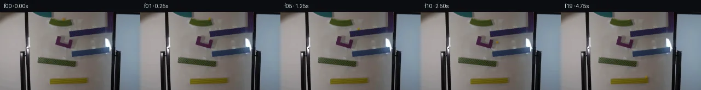

![首帧]()

Round 00
2026-11-05T10:33:06.799428+00:00像素候选变化代码 +235/−0inspection 更新
pixels f43704c6dca43090 · code dc097ebfafc0358c
查看本轮 generate.py 真实 diff
--- previous/generate.py
+++ current/generate.py
@@ -0,0 +1,235 @@
+"""Local image-space marble continuation; NumPy/Pillow/SciPy only."""
+from pathlib import Path
+import json
+import numpy as np
+from PIL import Image, ImageDraw, ImageFont
+from scipy.ndimage import gaussian_filter
+from artifact_io import save
+
+ROOT = Path(__file__).resolve().parent
+SOURCE = np.array(Image.open(ROOT / 'first_frame.png').convert('RGB'))
+H, W = SOURCE.shape[:2]
+RADIUS = 2.30
+
+
+def clean_plate():
+ """Reconstruct only the small original marble/shadow footprint."""
+ a = SOURCE.astype(float)
+ fill = a.copy()
+ for y in range(9, 16):
+ # Adjacent pixels from the same scanline retain the bowl's edge.
+ left = a[y, 108:111].mean(axis=0)
+ right = a[y, 121:124].mean(axis=0)
+ for x in range(110, 123):
+ f = (x - 109.5) / 12.5
+ fill[y, x] = left * (1 - f) + right * f
+ yy, xx = np.mgrid[:H, :W]
+ mask = ((xx >= 112) & (xx <= 120) & (yy >= 10) & (yy <= 15)).astype(float)
+ mask = gaussian_filter(mask, .58)
+ mask = np.minimum(mask * 1.18, 1)
+ # Preserve the clearly visible patterned front below the rim.
+ mask[16:] = 0
+ mask[:9] = 0
+ return a * (1 - mask[..., None]) + fill * mask[..., None]
+
+
+def upper_surface(x):
+ return 35.0 - .118 * (x - 127) - RADIUS
+
+
+def blue_surface(x):
+ return 72.4 - .120 * (x - 131) - RADIUS
+
+
+def green_surface(x):
+ return 84.0 + .10 * (x - 70) - RADIUS
+
+
+def yellow_surface(x):
+ return 123.0 - .018 * (x - 92) - RADIUS
+
+
+# Segment times and edge/landing events are solved from the planned geometry.
+TOP_END = .36
+UPPER_LAND = .72
+UPPER_END = UPPER_LAND + (8 + np.sqrt(8**2 + 4 * 42 * 23)) / 84
+U_START = 1.98
+U_END = 2.27
+U_KNOTS = np.array([
+ [1.98, 111.94, 54.75, -12, 12],
+ [2.055, 112.15, 54.75, 30, 6],
+ [2.135, 119.5, 56.3, 84, -8],
+ [2.220, 127.0, 51.9, 68, -50],
+ [2.270, 131.0, 48.5, 37, -4],
+])
+# The flight after the purple curve meets the measured blue upper edge.
+AFTER_U_DURATION = float(np.roots([150, .44, -21.6])[1])
+BLUE_LAND = U_END + AFTER_U_DURATION
+BLUE_X = 131 + 37 * AFTER_U_DURATION
+BLUE_DURATION = (-4 + np.sqrt(16 + 180 * (BLUE_X - 131))) / 90
+BLUE_END = BLUE_LAND + BLUE_DURATION
+GREEN_GAP = float(np.roots([130, 7.5, -15.9])[1])
+GREEN_LAND = BLUE_END + GREEN_GAP
+GREEN_X = 131 - 35 * GREEN_GAP
+GREEN_DURATION = (14 + np.sqrt(196 + 290 * (138.5 - GREEN_X))) / 145
+GREEN_END = GREEN_LAND + GREEN_DURATION
+YELLOW_GAP = float(np.roots([212.5, 6.576, green_surface(138.5) - yellow_surface(138.5)])[1])
+YELLOW_LAND = GREEN_END + YELLOW_GAP
+YELLOW_X = 138.5 + 32 * YELLOW_GAP
+
+
+def hermite(t):
+ i = np.searchsorted(U_KNOTS[:, 0], t, side='right') - 1
+ i = int(np.clip(i, 0, len(U_KNOTS) - 2))
+ a, b = U_KNOTS[i:i+2]
+ dt = b[0] - a[0]
+ u = np.clip((t - a[0]) / dt, 0, 1)
+ p = ((2*u**3 - 3*u**2 + 1) * a[1:3]
… diff truncated; 148 more lines …